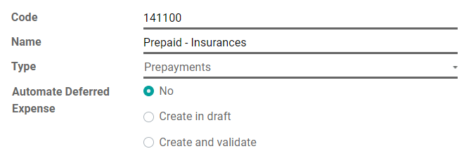
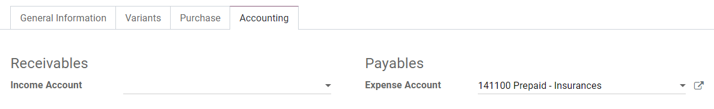
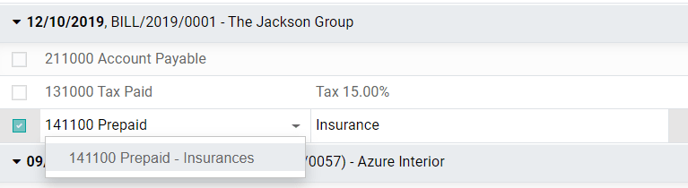

Gastos diferidos y prepagos¶
Los gastos diferidos y prepagos son costos que ya se han pagado por productos no entregados o servicios por recibir.
Estos costos son activos para la empresa que los paga, puesto que ya pagó por productos y servicios que aún no ha recibido o utilizado. La empresa no puede registrarlos en la cuenta de pérdidas y ganancias, o en la cuenta de resultados, ya que los pagos se contabilizarán en el futuro.
Estos gastos futuros deben diferirse en el balance de la empresa hasta el momento en que puedan ser reconocidos, al mismo tiempo o a lo largo de un periodo definido, en la cuenta de pérdidas y ganancias.
Por ejemplo, supongamos que pagamos $1,200 al contado por un año de seguro. Ya pagamos el costo ahora pero aún no hemos utilizado el servicio. Por lo tanto, contabilizamos este nuevo gasto en una cuenta de prepago y decidimos registrarlo mensualmente. Cada mes, durante los próximos 12 meses, se reconocerán $100 como gasto.
La aplicación de contabilidad de Odoo maneja los gastos diferidos y los pagos anticipados distribuyéndolos en múltiples asientos que se crearán automáticamente en modo de borrador y se registrarán periódicamente.
Nota
El servidor comprueba una vez al día si se debe publicar un asiento. Pueden pasar hasta 24 horas antes de que se refleje el cambio de borrador a registrado.
Prerrequisitos¶
Estas operaciones se deben registrar en una cuenta de gastos diferidos en lugar de en la cuenta de gastos predeterminada.
Configurar una cuenta de gastos diferidos¶
Para configurar su cuenta en el Plan de cuentas, vaya a , haga clic en Crear, y llene el formulario.
Nota
El tipo de esta cuenta debe ser activo corriente o prepago.
Contabilizar un gasto en la cuenta correcta¶
Seleccionar la cuenta en un borrador de factura¶
En un borrador de factura, seleccione la cuenta correcta para todos los productos cuyos gastos se deben diferir.

Elija una cuenta de gastos diferente para productos específicos¶
Comience a editar el producto, vaya a la pestaña de Contabilidad, seleccione la Cuenta de gastos correcta y guarde.
Truco
Es posible automatizar la creación de asientos de gastos para estos productos (ver: Automatizar los gastos diferidos).
Modificar la cuenta de un apunte contable registrado¶
Para hacer esto, abra su diario de compras en , seleccione el apunte contable que desea modificar, haga clic en la cuenta y seleccione la correcta.
Asientos de gastos diferidos¶
Crear un nuevo asiento¶
Un asiento de gasto diferido genera automáticamente todos los asientos como tipo borrador. Después, se contabilizan uno por uno en el momento adecuado hasta que se reconoce el importe total del gasto.
Para crear un nuevo asiento, vaya a , haga clic en Crear, y complete el formulario.
Haga clic en seleccione las compras relacionadas para vincular un apunte de diario existente a este nuevo asiento. Algunos campos se completarán automáticamente y el apunte aparecerá en la pestaña Gastos relacionados.

Después de hacerlo, puede hacer clic en calcular diferimiento (al lado del botón confirmar) para generar todos los valores del tablero de gastos. Este tablero muestra todos los asientos que Odoo registrará para reconocer su gasto, y en qué fecha.

¿Qué significa «Prorata Temporis»?¶
La función Prorata Temporis es útil para reconocer sus gastos con la mayor precisión posible.
Con esta función, el primer asiento en el tablero de gastos se calcula en función del tiempo que queda entre la fecha prorata y la fecha de primer reconocimiento, en lugar del tiempo predeterminado entre los reconocimientos.
Por ejemplo, el tablero de gastos anterior tiene su primer gasto con un importe de $70.97 en lugar de $100.00. Por lo tanto, el último asiento también es menor y tiene un importe de $29.03.
Asiento diferido del diario de compras¶
Puede crear un asiento diferido desde un apunte específico en su diario de compras.
Para hacerlo, abra su diario de compras yendo a , y seleccione el apunte de diario que desea diferir. Asegúrese de que esté registrado en la cuenta correcta (vea: Cambiar la cuenta de un apunte de diario registrado).
A continuación, haga clic en Acción, seleccione Crear asiento diferido, y complete el formulario de la misma manera que lo haría para crear un nuevo asiento.

Modelos de gastos diferidos¶
Puede crear Modelos de gastos diferidos para crear sus asientos de gastos diferidos con mayor rapidez.
Para crear un modelo, vaya a , haga clic en Crear, y complete el formulario de la misma manera que lo haría para crear un nuevo asiento.
Truco
También puede convertir un asiento de gastos diferidos confirmado en un modelo abriéndolo desde y luego, haciendo clic en el botón Guardar modelo.
Aplicar un modelo de gasto diferido a un nuevo asiento¶
Cuando cree un nuevo asiento de gastos diferidos, complete la cuenta de gastos diferidos con la cuenta de reconocimiento correcta.
En la parte superior del formulario aparecen nuevos botones con todos los modelos vinculados a esa cuenta. Al hacer clic en un modelo, se completa el formulario según dicho modelo

Automatizar los gastos diferidos¶
Cuando se crea o edita una cuenta de tipo activo corriente o prepago, se puede configurar para que los gastos que se abonan en ella se difieran automáticamente.
Hay tres opciones para el campo Automatizar gastos diferidos:
No: es el valor predeterminado. No pasa nada.
Crear en borrador: cuando se valida una transacción en la cuenta se crea un borrador de asiento de gastos diferidos, pero no se valida. Usted debe completar el formulario correspondiente en .
Crear y validar: también debe seleccionar un modelo de gastos diferidos (ver: Modelos de gastos diferidos). Cada vez que se registra una operación en la cuenta, se crea un asiento de gastos diferidos que se valida inmediatamente.

Truco
Puede, por ejemplo, seleccionar esta cuenta como la cuenta de gastos predeterminada de un producto para automatizar totalmente su compra. (ver: Elija una cuenta de gastos diferente para productos específicos).
Ver también